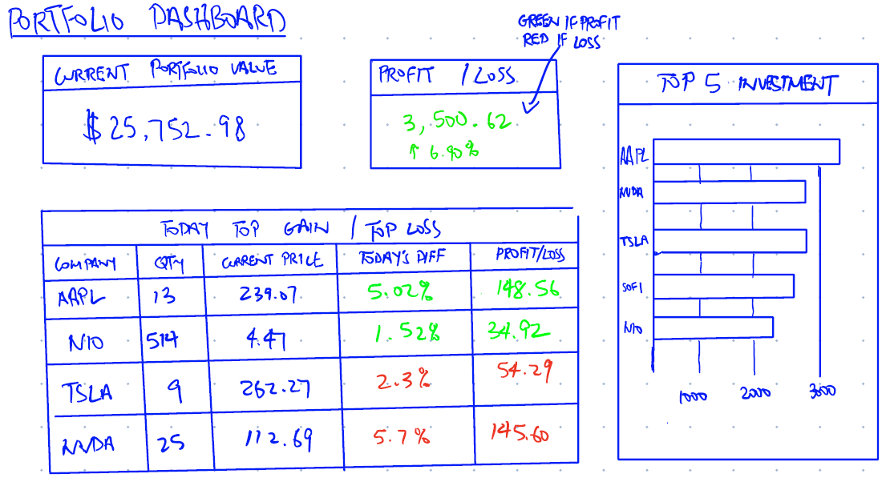
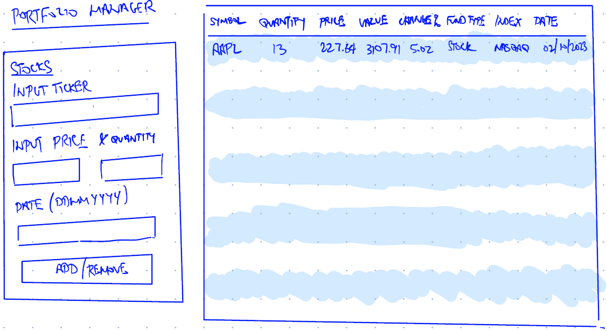

Proposal
Project Proposal: StockViz
Project Overview & Motivation
Investors and traders often struggle with tracking their stock portfolio efficiently, especially when using multiple sources to monitor performance, technical indicators, and forecasts. Many existing platforms offer complex interfaces, overwhelming users with excessive data and advanced financial tools that are not always necessary for retail investors.
The goal of this project is to develop a simple and user-friendly stock portfolio tracking and analysis app using R Shiny. The app will allow users to:
- Add and track stocks in their portfolio.
- View interactive visualizations of stock prices and performance.
- Perform basic technical analysis, such as Exponential Moving Averages (EMA).
- Forecast future trends based on historical data.
- Keep the interface lightweight and intuitive, making it accessible to casual investors who wan a hassle-free experience.
Problem statement
Tracking a stock portfolio efficiently is often challenging due to :
- Overly Complex Tools
- Many stock tracking platforms are designed for professional traders, making them too advanced for retail investors.
- Many free platforms lack integration of technical analysis tools like EMA in a simple manner.
- Lack of Personalization
- If users do not use such app, they often have to manually enter their stocks into spreadsheets to keep track of their portfolio especially if they use multiple trading platforms.
- No Forecasting & Basic Technical Analysis
- Many free tools do not provide predictive insights, such as EMA-based signals or basic forecasting.
How Our App Solves These Problems
✔User-friendly Interface: Simple and interactive dashboard for tracking portfolio performance.
✔Technical Analysis Tools: Integration of EMA, SMA, and trend analysis.
✔Forecasting Feature: Users can apply time-series forecasting models for price trends.
✔Custom Portfolio Tracking: Users can add and remove stocks.
Data
This project will use real-life stock dataset from Yahoo Finance.
- Free
- Impressive range of data
- Quick and easy to set up
Methodology & Analytical Approach
Problem Statement
Prototype Sketches
Portfolio Dashboard
Users are able to see an overview of their current portfolio. Some insights they are able to gain are their current portfolio value, profit and loss, and top 5 investments.
Portforlio Manager
Users will use this to add or remove stocks in their portfolio. They will be able to view all the stocks in their portfolio on the right.

Shiny App Features
- User can add/remove stocks to their portfolio
- Track Profit and Loss
- Explore new stocks
R Packages
- shiny: For web app framework
- tidyverse: For data manipulation
- dplyr:
- plotly: For interactive charts _ quantmod: For fetching stock market data
- tidyquant: For fetching stock market data
- DT: For displaying tables
- PerformanceAnalytics: For portfolio analysis
- TTR: for techinical indicators
Project Schedule
Project timeline
1st Meeting: 05th March 2025 9-10pm
1st Draft Proposal: 10th March 2025 9-10pm